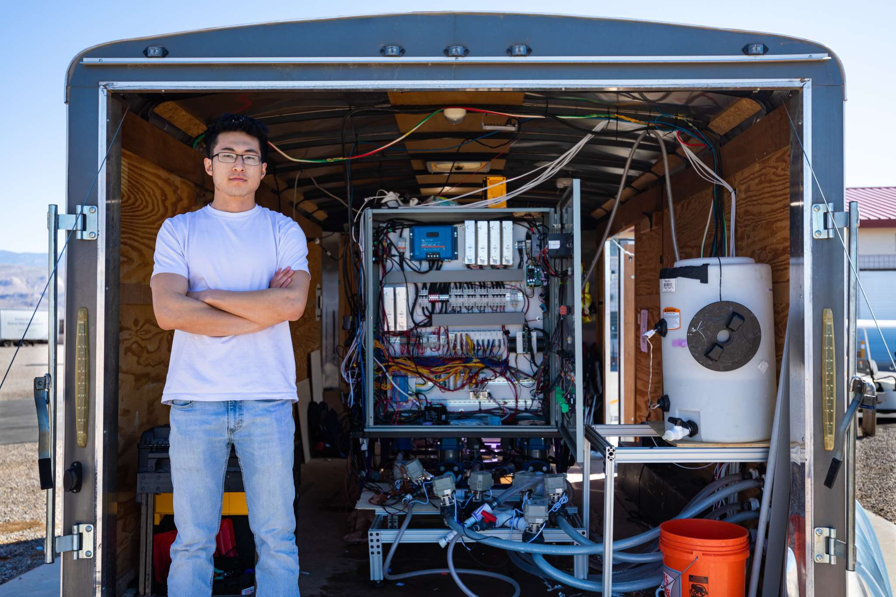
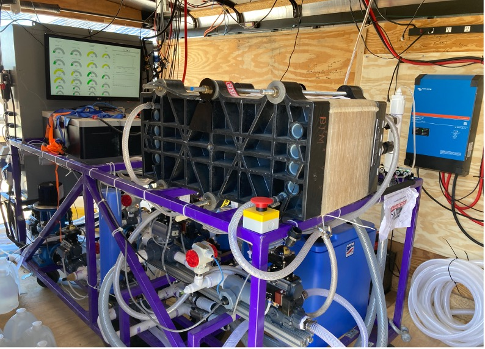
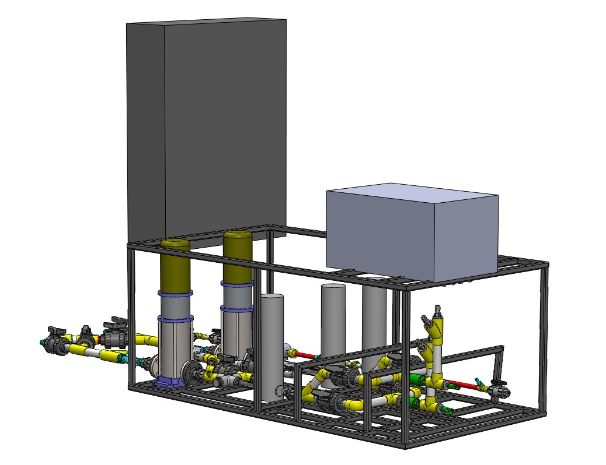
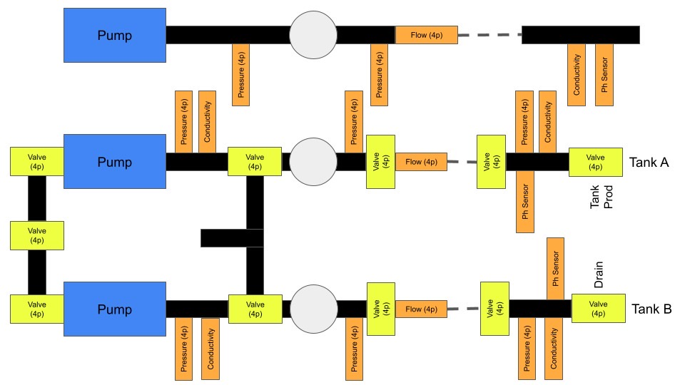
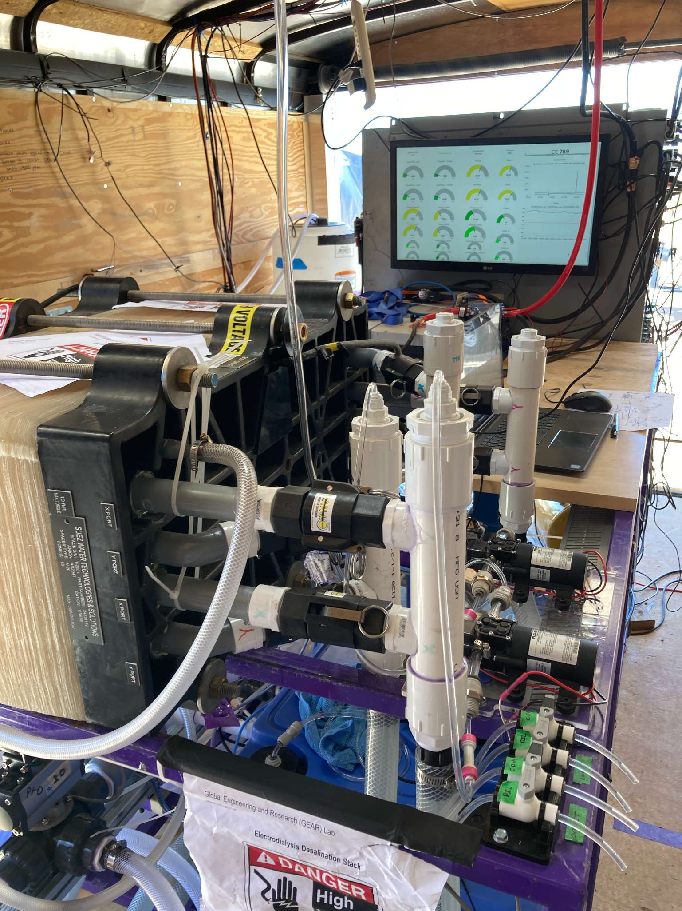
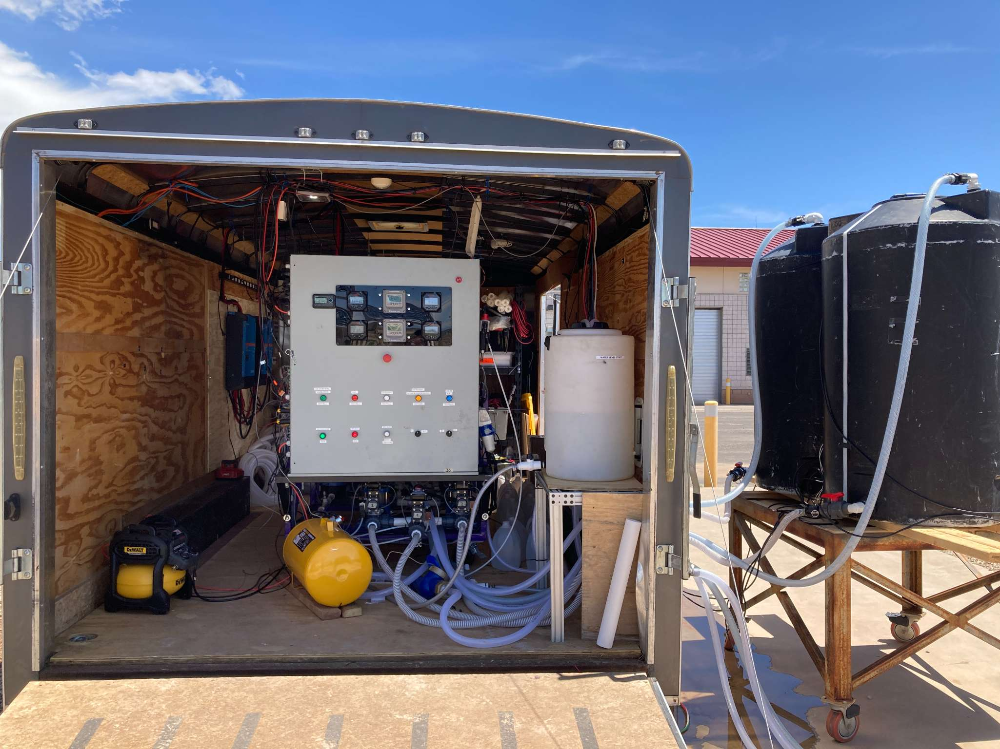
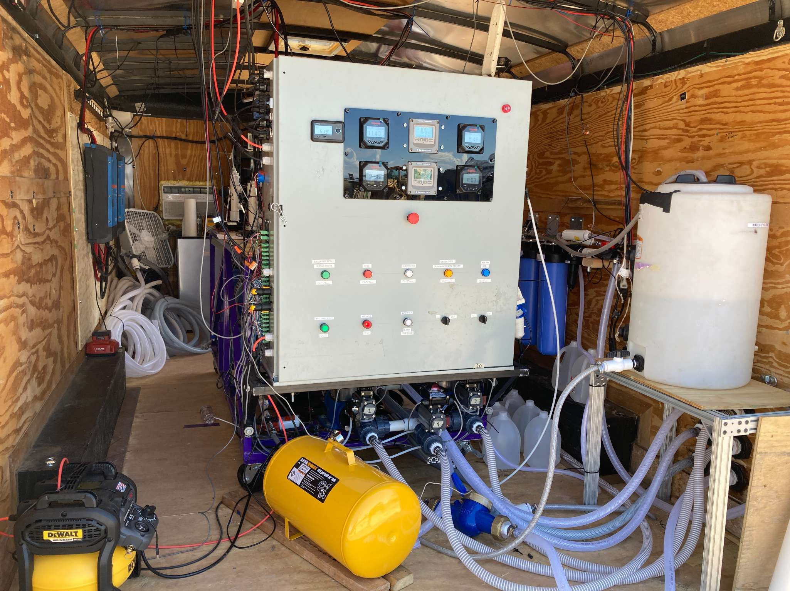
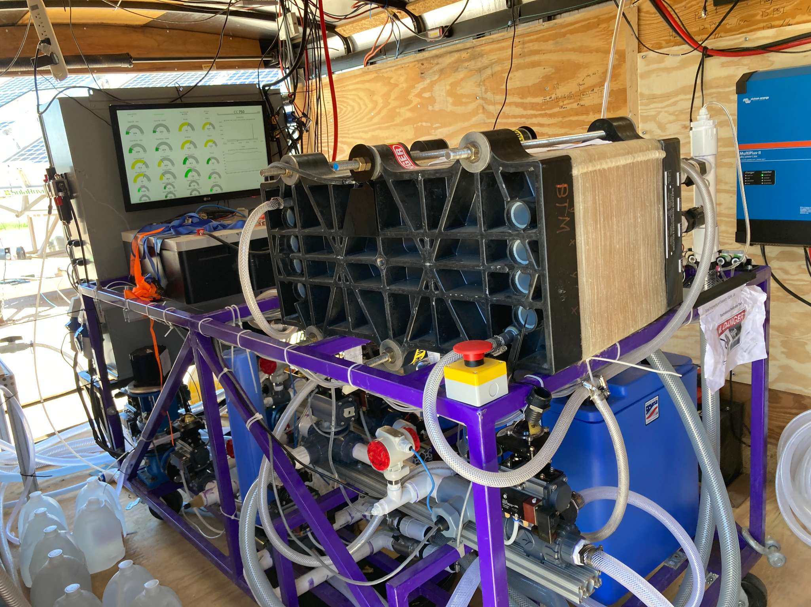
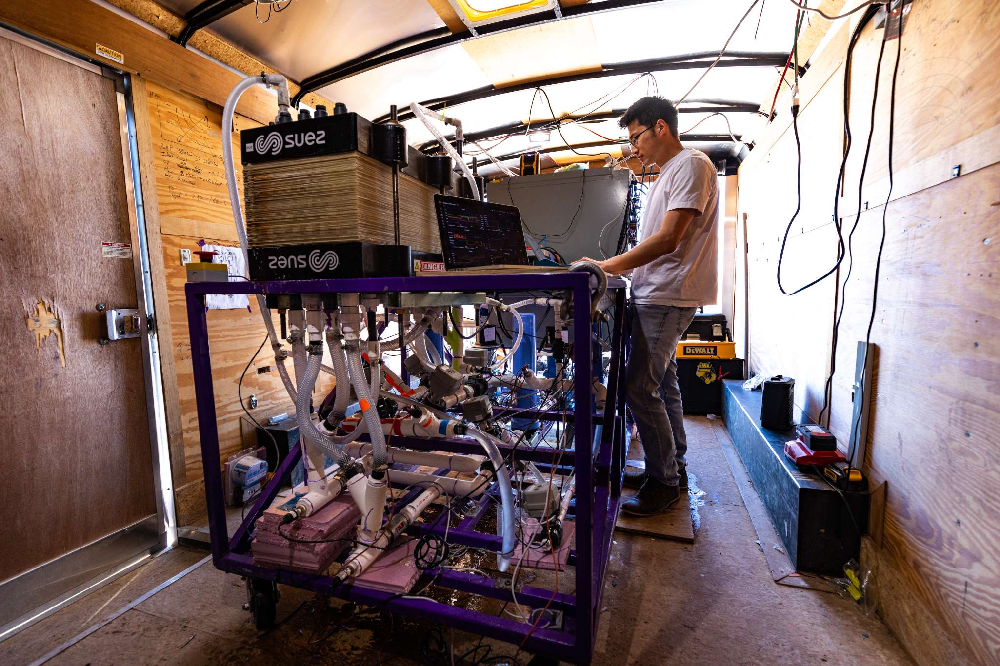
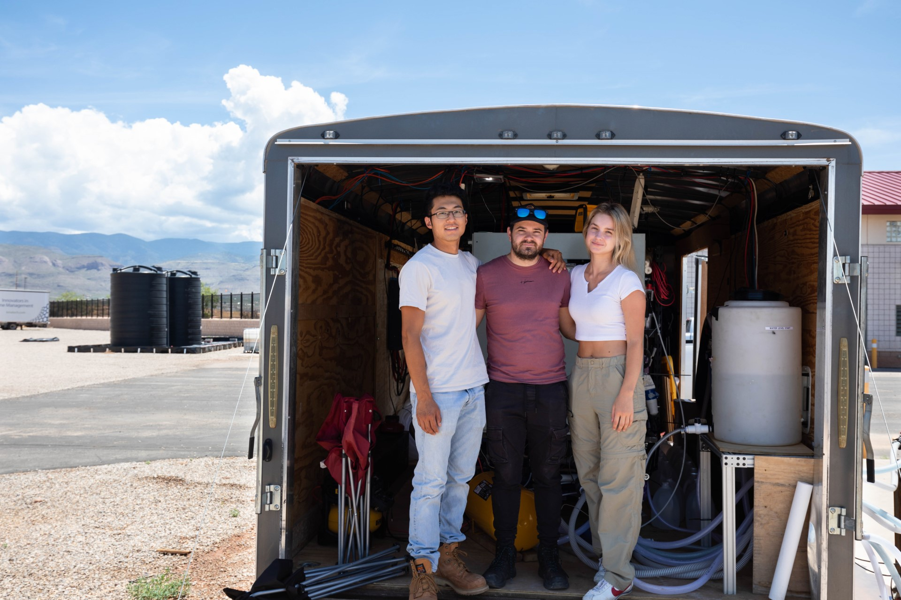

The Context
Background
Inland brackish groundwater is a critical freshwater resource, yet its salinity often exceeds safe drinking levels. While desalination offers a solution, traditional off-grid systems rely on massive battery banks to buffer the inherent variability of solar energy—driving up the cost, footprint, and maintenance requirements for the communities that need it most.
The Problem
Existing solar desalination systems are typically designed to run at a constant set-point. When solar intensity fluctuates, the system fails unless expensive energy storage fills the gap. This battery-heavy architecture accounts for a significant portion of capital expenditure and represents a primary point of failure in remote environments.
The Solution
We developed a direct-drive Photovoltaic Electrodialysis (PV-ED) system that removes the need for large batteries. By implementing a "Flow-Commanded Current Control" strategy, the system dynamically adjusts its power consumption to match real-time solar availability. In a 6-month field pilot at BGNDRF, New Mexico, the prototype produced between 2000 and 5000 liters per day while reducing battery capacity requirements by over 99%.
Nature Water Paper (2024)
Primary Research Manuscript
The Gallery









